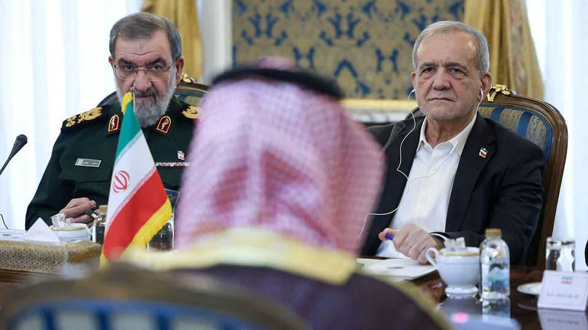

Saudi Arabia wants Iran to call off the Houthis and make a deal with America
But a summit meant to pressure the regime achieved little

Oct 29th 2026
FOR months Iran’s allies have battered Saudi Arabia with missiles and drones. They have damaged its most important oil pipeline and killed at least 17 people at Riyadh’s airport, which remains largely out of service. It raised a few eyebrows, then, when Khalid bin Salman, the Saudi defence minister, flew to Tehran on October 26th for a visit meant to “encourage dialogue”. Grinning, the brother of the Saudi crown prince even posed for photos with Mohsen Rezaei, Iran’s top security official.
The meeting was a surprise; even Saudi state media seemed unprepared. Both sides scrambled to spin it. Iranian officials saw a demonstration of their strength: a top Saudi royal arriving like a supplicant. One hardline MP said a “helpless” kingdom had to “beg” for mediation with the Houthis, the Iran-backed militia in Yemen that has done much of the damage.
Prince Khalid did not travel alone, though. He was joined in Tehran by the Pakistani army chief and the head of Turkish intelligence. Both countries are fellow members of the Mecca pact, a mutual-defence agreement signed in Saudi Arabia in August. The Saudis cast the summit as a show of deterrence, in which three big Muslim powers jointly delivered a warning to an Iran that stood alone.
For all the drama, the summit seemed to achieve little. The Saudis raised two immediate concerns. One is the Houthis. Iran has little incentive to rein them in, though. Indeed, there were more missile attacks on Riyadh after Prince Khalid’s visit.
The other is the threat of renewed war between America and Iran. Donald Trump has warned Gulf states that he is preparing another round of strikes after next week’s midterm elections. America is sending warships, air-defence batteries and other equipment to the region. A third aircraft-carrier is due to arrive in November.
Much of the world is frantically trying to prevent this. Delegations from Qatar and Pakistan, which negotiated an earlier deal to halt the war, have made several visits to Tehran this month. European diplomats are working the phones. Even Vladimir Putin seems to be getting in on the act. He held talks in Moscow this week with Iran’s president and Qatar’s emir.
Yet this flurry of diplomacy has not produced a deal that both Iran and America will accept. The former insists on a narrow agreement centred on the Strait of Hormuz. If America ends its blockade of Iranian ports, lifts sanctions and makes other economic concessions, the regime has pledged to reopen the waterway within a week. Gulf diplomats are haggling over the timetable: perhaps Iran would agree to four days, rather than seven.
That misses a bigger problem. Mr Trump is uninterested in such a deal, which would essentially be a return to the short-lived memorandum of understanding he signed in June. The president wants Iran to make immediate concessions on its nuclear programme. So far, Iran is unwilling; it refused even to discuss the nuclear issue during the four-party talks in Tehran.
Diplomats in the region say Saudi Arabia offered Iran a carrot and a stick. If it makes concessions that enable a deal with America, the kingdom and its neighbours are willing to discuss a broader regional-security pact. If Iran refuses, and resumes attacks on Gulf states, the Mecca-pact countries will be ready to respond.
The risk is that Iran saw neither as credible. It doubts that Saudi Arabia shares its view of regional security, which includes booting American troops from the Gulf. As for the stick, the Saudis are already struggling to beat back the Houthis, and its new allies are reluctant to join offensive strikes.
After decades of relying on America, Gulf states are now engaged in trying to defuse a regional crisis themselves. It is a welcome effort—but for now, the threat of war still looms. ■